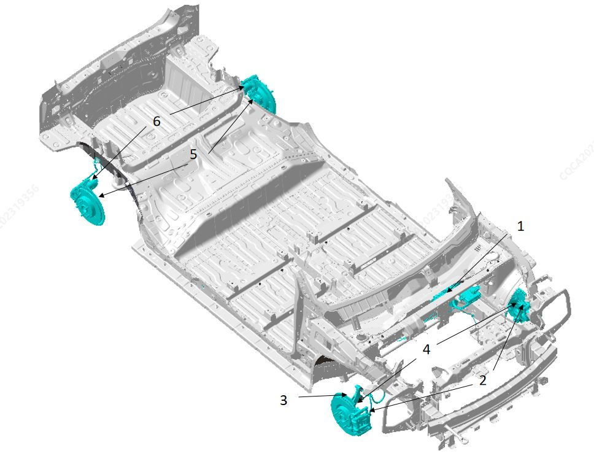
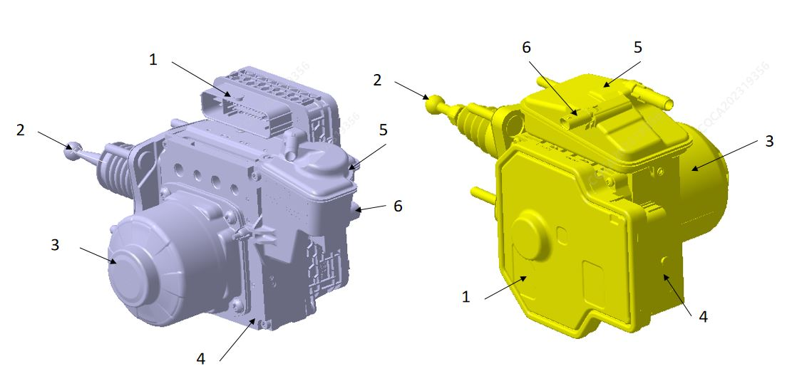
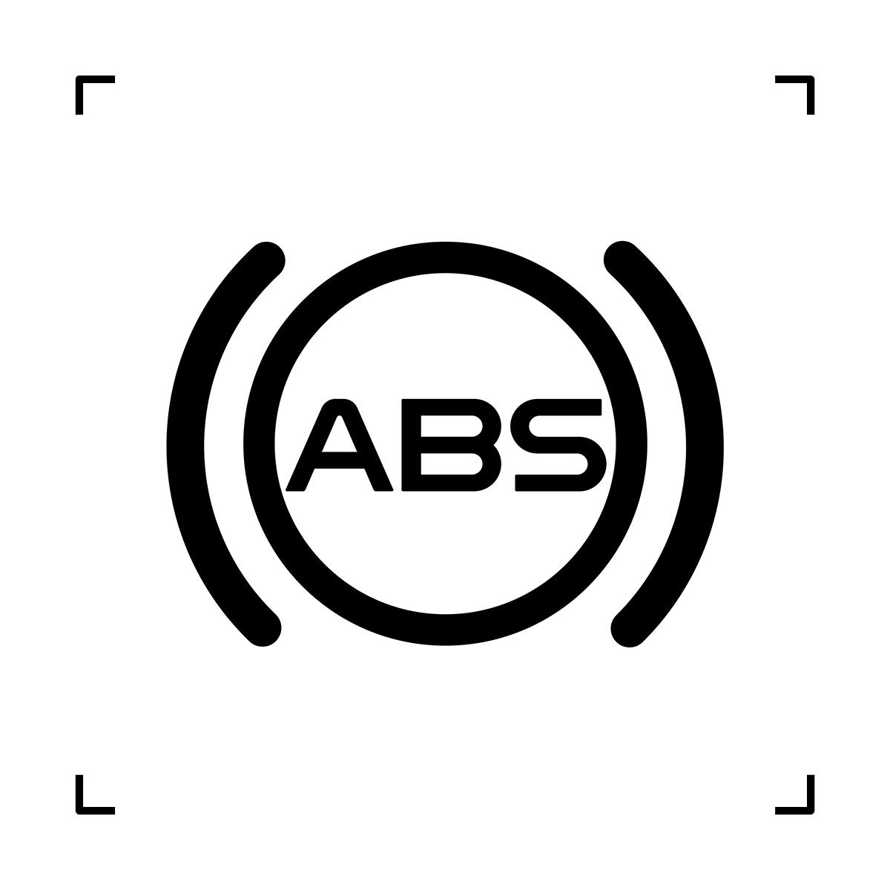
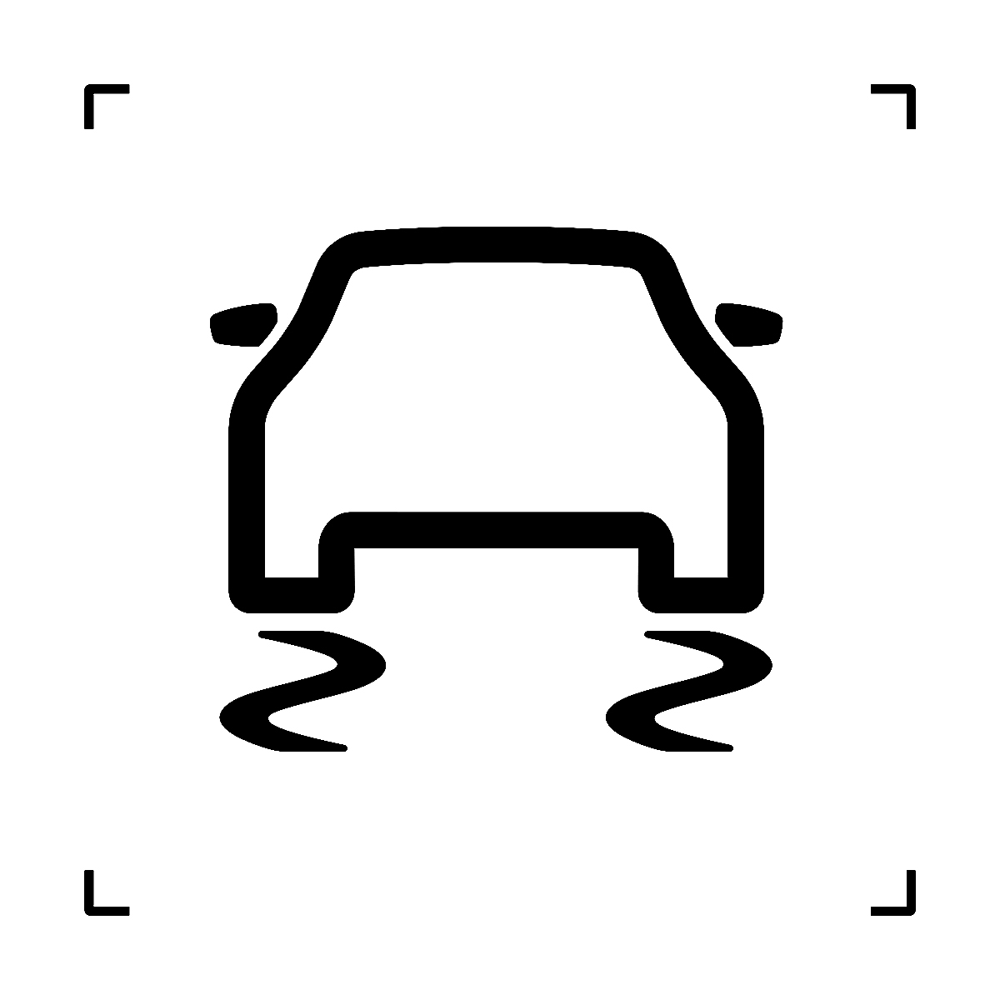

Описание Компонент

| № | Компонент |
| 1 | Интегрированный модуль управления тормозной системой |
| 2 | Узел переднего тормозного суппорта |
| 3 | Датчик частоты вращения колеса в сборе |
| 4 | Узел переднего поворотного кулака |
| 5 | Датчик частоты вращения колеса в сборе |
| 6 | Исполнительный механизм электронного стояночного тормоза |
1. Интегрированный модуль управления тормозной системой (IBCU)
Основными Компонент интегрированного модуля управления тормозной системой (IBCU) являются электронный блок управления, гидравлический модуль управления, электродвигатель, бачок для жидкости, толкатель и датчик уровня жидкости.

| № | Компонент | Количество |
| 1 | Электронный блок управления | 1 |
| 2 | Толкатель | 1 |
| 3 | Электродвигатель | 1 |
| 4 | Гидравлический модуль управления | 1 |
| 5 | Бачок для жидкости | 1 |
| 6 | Датчик уровня жидкости | 1 |
Интегрированный модуль управления тормозной системой на основе введенного водителем хода педали распознает тормозное намерение водителя; блок управления путем точного расчета определяет требуемую для водителя интенсивность торможения, а IBCU управляет гидравлическим модулем и электродвигателем для регулирования тормозного усилия, реализуя тем samym рабочее торможение.
Электронный блок управления интегрированного модуля управления тормозной системой непрерывно контролирует состояние колес с помощью датчиков скорости вращения колес и посредством координированной работы электродвигателя и электромагнитных клапанов удерживает проскальзывание колес в определенном диапазоне, поддерживая устойчивость автомобиля. Модуль управления IBCU постоянно сопоставляет запрограммированные пределы проскальзывания со значениями замедления, поступающими от датчиков скорости вращения колес, что позволяет обнаруживать тенденцию к блокировке каждого колеса. При обнаружении тенденции к блокировке какого-либо колеса система IBCU путем управления открытием или закрытием соответствующих гидравлических клапанов в корпусе клапанов независимо регулирует давление в колесных цилиндрах, предотвращая блокировку колес. Когда Функция ABS не задействована, Функция EBD продолжает регулировать тормозное усилие на задних колесах, гарантируя отсутствие опережающей блокировки задних колес по сравнению с передними для обеспечения безопасности автомобиля.
Интегрированный модуль управления тормозной системой IBCU объединяет в себе функции ABS / EBD / ESC / TCS / рекуперации энергии / электроусилителя и др.; при включении зажигания модуль управления IBCU дает команду Комбинация приборов включить индикатор ABS / EBD / ESC на приборной панели, который горит до завершения самопроверки системы ABS / EBD / ESC, после чего гаснет. При возникновении неисправности в системе модуль дает команду приборной панели зажечь соответствующий индикатор в качестве Предупреждение.
Модуль управления IBCU непрерывно отслеживает любые возможные неисправности системы и при их появлении автоматически сохраняет их. Доступ к системе интегрированного модуля управления тормозной системой IBCU можно получить с помощью Диагностический прибор через порт OBD.
2. Датчик скорости вращения колеса
Датчик скорости вращения колеса представляет собой двухпроводной датчик Холла; при вращении колеса модуль управления IBCU использует сигналы скорости для расчета частоты вращения колес и скорости автомобиля. Датчик получает сигналы от магнитного энкодера и передает их на интегрированный модуль управления тормозной системой IBCU. Магнитный энкодер встроен в подшипники передней и задней ступиц.
4. Индикатор ABS
Индикатор ABS

расположен на Комбинация приборов и загорается для информирования водителя о неисправности системы ABS. При нормальной работе ABS при переводе выключателя зажигания из положения "OFF" в положение "ON" система ABS выполняет самопроверку, индикадикатор загорается примерно на 3 s, а затем гаснет и остается выключенным. Комбинация приборов зажигает индикадикатор ABS при возникновении следующих событий:Система ABS обнаружила неисправность Функция ABS.
Система ABS выполняет самопроверку в начале каждого цикла зажигания. Индикатор загорается примерно на 3 s.
Комбинация приборов обнаружила потерю связи с системой ABS.
5. Индикатор EBD
Расположен на Комбинация приборов, загораясь , информирует водителя о неисправности EBD. Когда индикатор ABS горит, а индикатор EBD не горит, Функция EBD в системе сохраняется. Когда горят оба индикатора — ABS и EBD, функции ABS и EBD не работают.
6. Индикатор ESC
Расположен на Комбинация приборов, загораясь

, информирует водителя о неисправности ESC. Когда индикатор ESC горит, а индикаторы ABS и EBD не горят, имеется неисправность только Функция ESC. Мигание индикатора ESC указывает на срабатывание Функция ESC.